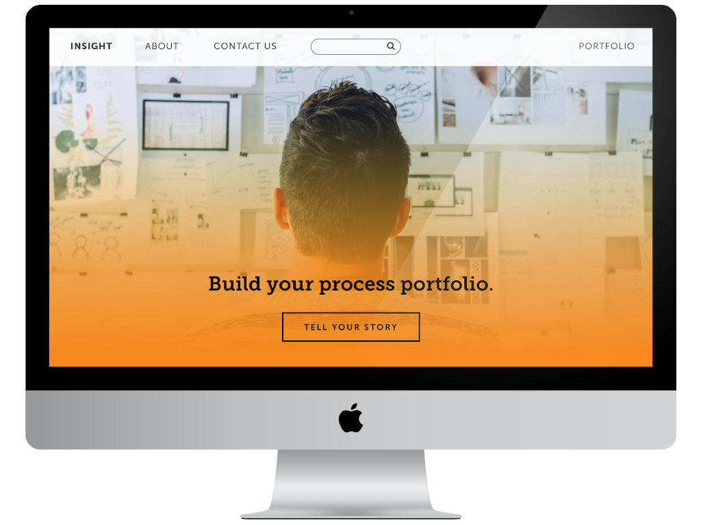
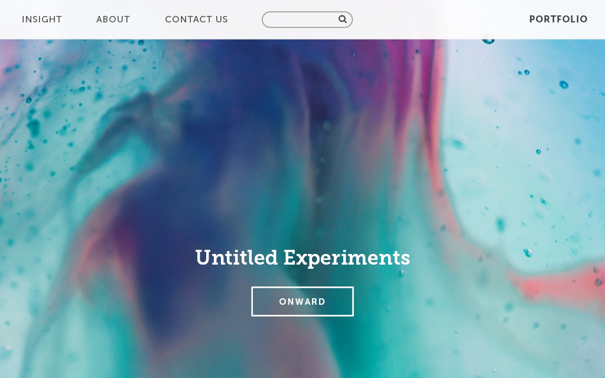
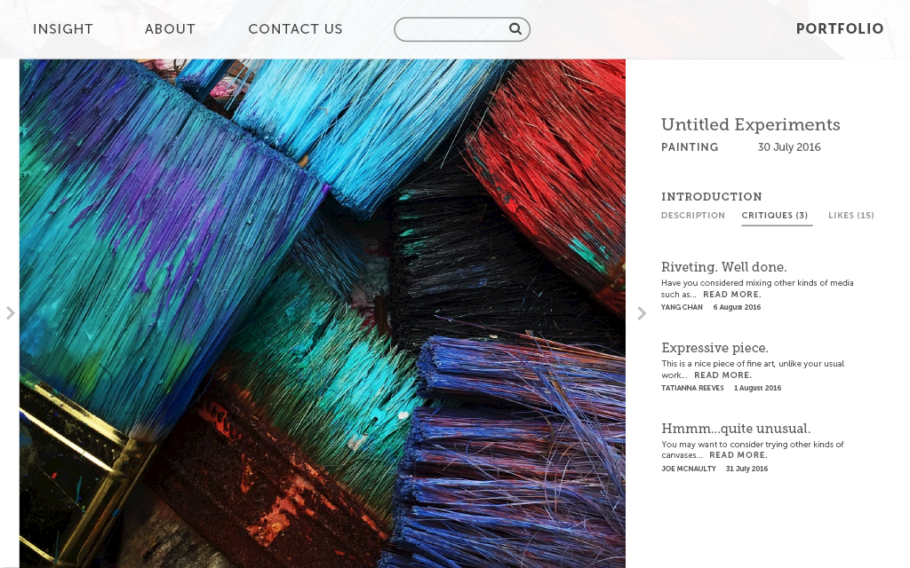
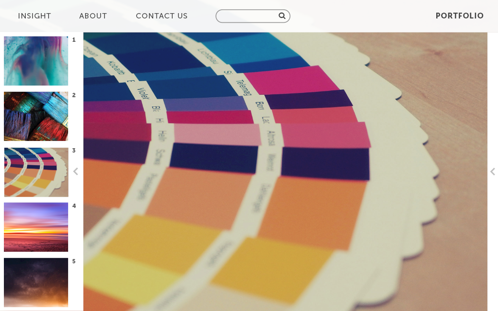
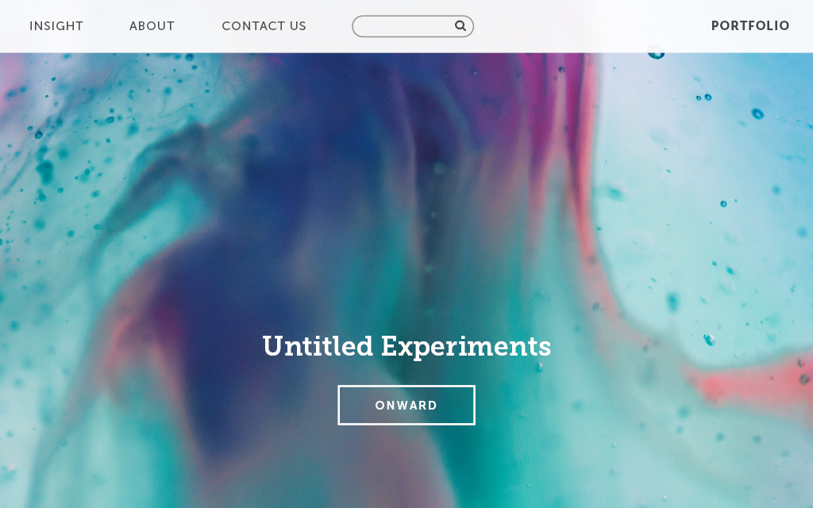
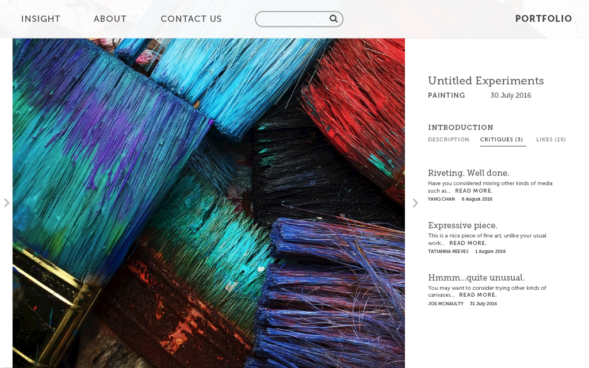
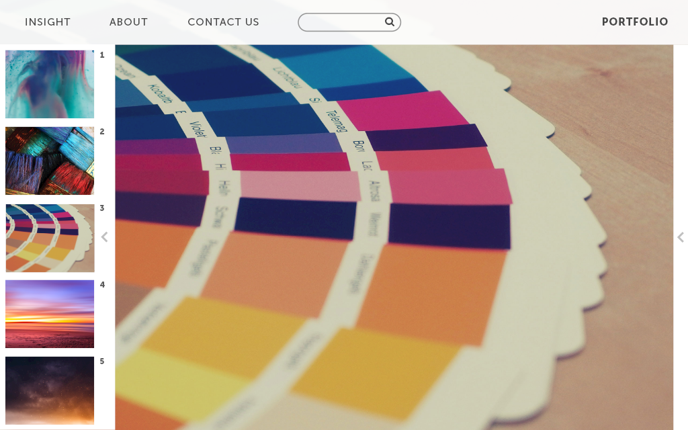

INSIGHT
In collaboration with local designers in Orlando, I participated in design sprints with the Design Orlando Meetup. We designed a process portfolio website in which designers can share their process with fellow designers and employers and critique their fellow designers' work.
The Job Hunt
Designers strive to share more than their final designs; they educate other professionals and students on the process. They attend job interviews to tell the story. The goal of INSIGHT is to enable designers to articulate their process and showcase their work.

Visuals
Below are the latest visuals for the project. The wireframes, information architecture, sitemap, and more will appear during later updates.
 




